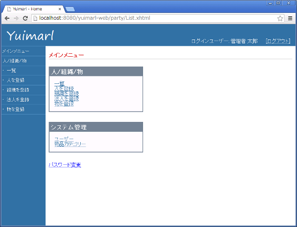
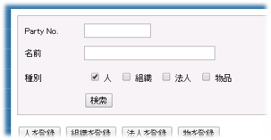
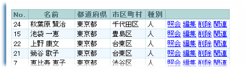
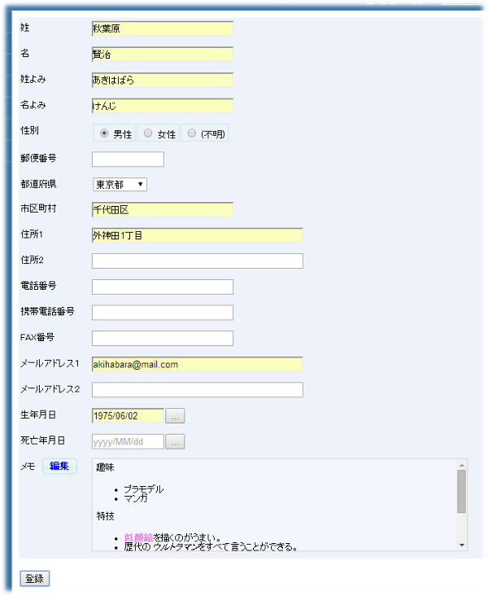
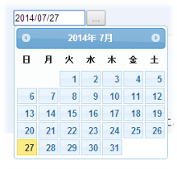
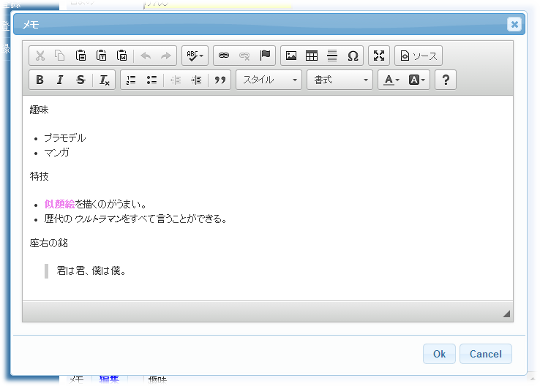
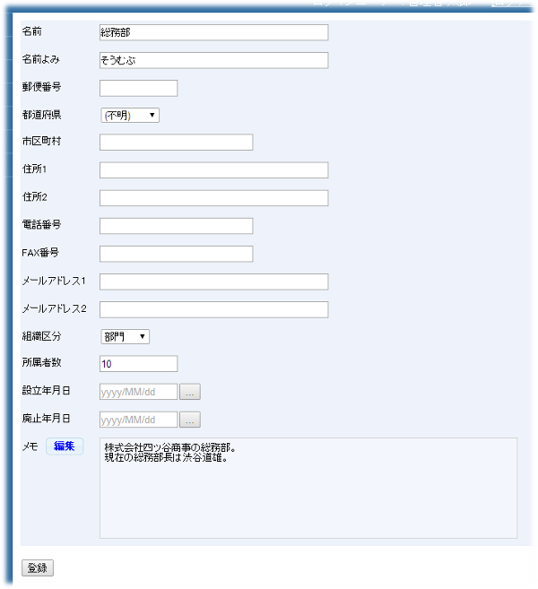
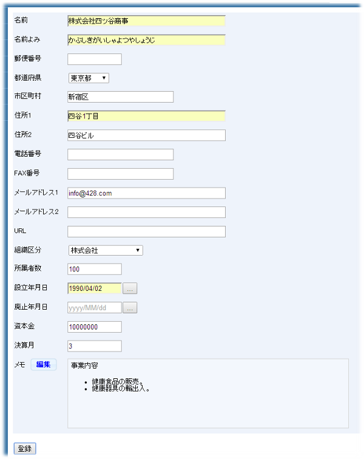
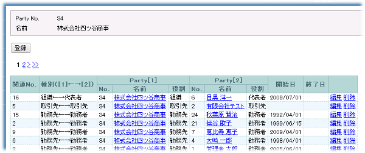
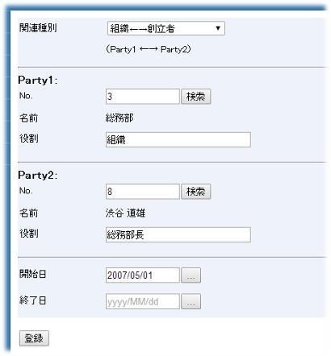

現在、大幅に作り直した新バージョンを開発中です。
使い方
Yuimarl を使用する方法について記述します。
Webブラウザ
Yuimarl を使用するためには、パソコン用のWebブラウザが必要です。 HTML5、XHTML、JavaScript、CSS に対応した最新のWebブラウザをご使用ください。古いバージョンのWebブラウザでは動作しないことがあります。また、JavaScriptの作動を許可するように設定してください。
動作確認済みのWebブラウザ
- Mozilla Firefox 31.0
- Google Chrome 36.0
- Safari 7.0.6
- Internet Explorer 11.0
ログイン
Yuimarl にログインするための手順は、以下の通りです。
- Webブラウザを起動します。
- Yuimarl のアドレスを入力してアクセスします。
- ログイン画面が表示されるので、ユーザーIDとパスワードを入力して「ログイン」ボタンをクリックします。
「デバイス」で「Mobile」を選択すると、スマートフォン向けの画面となります。（現在は、人/組織/物の検索・表示機能のみです。）
サンプル用のユーザーID、パスワードは以下の通りです。
ユーザーID パスワード 説明 U00001 test すべての権限を持つシステム管理者。ユーザーを登録する権限を持つ。 U00002 test 人/組織/物の参照権限を持つ一般ユーザー。 U00003 test 何も権限を持たないユーザー。 - ログイン認証がOKならば、メインメニュー画面が表示されます。

セッションタイムアウト
一定時間（初期設定では30分間）操作が行われないと、セッションタイムアウトとなります。セッションタイムアウトになった後で、何らかの操作を行うと、エラー画面が表示されます。
データ登録画面で入力に時間が掛かると、タイムアウトになって、せっかく入力したのが無駄になるということがありますので、ご注意ください。
ログアウト
Yuimarl からログアウトするための手順は、以下の通りです。
- 画面右上にある「ログアウト」というリンクをクリックします。
- ブラウザを終了させます。
（なお、1.を省いてブラウザを終了させても、特に問題はありません。）
人/組織/物の一覧
メインメニュー画面で「人/組織/物」の枠内にある「一覧」をクリックするか、画面左にある青いメニューで、「人/組織/物」の下にある「一覧」をクリックすると、人、組織、物の一覧を表示する画面が表示されます。
この画面では、条件を指定して検索を行うことができます。
条件検索
人/組織/物を条件検索するには、検索条件欄に検索条件を入力して「検索」ボタンをクリックします。

| Party No. | Yuimarl に登録されたすべての 人/組織/物 には、「Party No.」という識別番号が付与されます。検索したい「Party No.」がわかっている場合は、ここに入力します。 |
| 名前 | 人/組織/物を名前で検索したい場合は、ここに入力します。検索は部分一致で行われます。たとえば、「会社」と入力すれば、名前に「会社」という文字が含まれるすべての人/組織/物が選択されます。 |
| 種別 | 人を検索対象とする場合は「人」にチェックを付けます。組織を検索対象とする場合は「組織」にチェックを付けます。法人を検索対象とする場合は「法人」にチェックを付けます。物品を検索対象とする場合は「物品」にチェックを付けます。 どこにもチェックを付けないと、すべての種別が検索対象となります。 |
一覧
検索結果一覧に表示される項目の説明は以下の通りです。

| No. | 対象データの「Party No.」が表示されます。 |
| 名前 | 対象データの名前が表示されます。 |
| 都道府県 | 対象データの都道府県が表示されます。 |
| 市区町村 | 対象データの市区町村が表示されます。 |
| 種別 | 対象データの種別が表示されます。 |
| 照会 | クリックすると、対象データの詳細情報画面に遷移します。 |
| 編集 | クリックすると、対象データの編集画面に遷移します。 |
| 削除 | クリックすると、対象データの削除確認メッセージが表示されます。 |
| 関連 | クリックすると、対象データに関連付けられている人/組織/物の一覧画面に遷移します。 |
ページ遷移
検索結果のレコード数が20件を超えると、一覧の下にページ遷移用のリンクが表示されます。
| << | クリックすると、先頭のページに遷移します。 |
| < | クリックすると、前のページに遷移します。 |
| 番号 | クリックすると、その番号のページに遷移します。 |
| > | クリックすると、次のページに遷移します。 |
| >> | クリックすると、最後のページに遷移します。 |
人の登録
メインメニュー画面で「人を登録する」をクリックするか、画面左にある青いメニューで、「人を登録」をクリックすると、人を登録する画面が表示されます。

| 姓 | 姓を入力します。 |
| 名 | 名を入力します。 |
| 姓よみ | 姓の読みを入力します。 |
| 名よみ | 名の読みを入力します。 |
| 性別 | 性別を選択します。 |
| 郵便番号 | 郵便番号を入力します。 |
| 都道府県 | 都道府県を選択します。 |
| 市区町村 | 市区町村を入力します。 |
| 住所1 | 住所を入力します。 |
| 住所2 | 住所1の追加情報を入力します。 |
| 電話番号 | 電話番号を入力します。 |
| 携帯電話番号 | 携帯電話番号を入力します。 |
| FAX番号 | FAX番号を入力します。 |
| メールアドレス1 | メールアドレスを入力します。 |
| メールアドレス2 | メールアドレス1以外にメールがある場合に入力します。 |
| 生年月日 | 生年月日を YYYY/MM/DD 形式で入力します。日付入力画面が表示されるので、そこから選択することもできます。 |
| 死亡年月日 | この人がすでに死亡しており、その日付が分かる場合に入力します。 |
| メモ | この人に関する特記事項がある場合、「編集」ボタンをクリックするとメモ編集画面が表示されるので、そこで入力します。 |
入力したら「登録」ボタンをクリックします。
日付入力画面
日付入力欄では、次のようにポップアップ表示されるので、ポップアップから年月日を指定することができます。

メモ入力画面
メモ入力欄で「編集」ボタンをクリックするとメモ編集画面が表示されるので、そこで入力します。
文字の大きさ、色などを指定することができます。
入力が終わったら「OK」ボタンをクリックします。

組織の登録
メインメニュー画面で「組織を登録する」をクリックするか、画面左にある青いメニューで、「組織を登録」をクリックすると、組織を登録する画面が表示されます。

| 名前 | 名前を入力します。 |
| 名前よみ | 名前の読みを入力します。 |
| 郵便番号 | 郵便番号を入力します。 |
| 都道府県 | 都道府県を選択します。 |
| 市区町村 | 市区町村を入力します。 |
| 住所1 | 住所を入力します。 |
| 住所2 | 住所1の追加情報を入力します。 |
| 電話番号 | 電話番号を入力します。 |
| FAX番号 | FAX番号を入力します。 |
| メールアドレス1 | メールアドレスを入力します。 |
| メールアドレス2 | メールアドレス1以外にメールがある場合に入力します。 |
| 組織区分 | 組織の区分を選択します。 |
| 所属者数 | 所属者数を入力します。 |
| 設立年月日 | 組織が設立された年月日を YYYY/MM/DD 形式で入力します。日付入力画面が表示されるので、そこから選択することもできます。 |
| 廃止年月日 | この組織がすでに廃止されており、その日付が分かる場合に入力します。 |
| メモ | この組織に関する特記事項がある場合、「編集」ボタンをクリックするとメモ編集画面が表示されるので、そこで入力します。 |
入力したら「登録」ボタンをクリックします。
法人の登録
メインメニュー画面で「法人を登録する」をクリックするか、画面左にある青いメニューで、「法人を登録」をクリックすると、法人を登録する画面が表示されます。

| 名前 | 名前を入力します。 |
| 名前よみ | 名前の読みを入力します。 |
| 郵便番号 | 郵便番号を入力します。 |
| 都道府県 | 都道府県を選択します。 |
| 市区町村 | 市区町村を入力します。 |
| 住所1 | 住所を入力します。 |
| 住所2 | 住所1の追加情報を入力します。 |
| 電話番号 | 電話番号を入力します。 |
| FAX番号 | FAX番号を入力します。 |
| メールアドレス1 | メールアドレスを入力します。 |
| メールアドレス2 | メールアドレス1以外にメールがある場合に入力します。 |
| URL | ホームページがある場合は、そのURL（アドレス）を入力します。 |
| 組織区分 | 法人の区分を選択します。 |
| 所属者数 | 所属者数を入力します。 |
| 設立年月日 | 法人が設立された年月日を YYYY/MM/DD 形式で入力します。日付入力画面が表示されるので、そこから選択することもできます。 |
| 廃止年月日 | この法人がすでに廃止されており、その日付が分かる場合に入力します。 |
| 資本金 | 資本金を入力します。 |
| 決算月 | 決算月を入力します。 |
| メモ | この法人に関する特記事項がある場合、「編集」ボタンをクリックするとメモ編集画面が表示されるので、そこで入力します。 |
入力したら「登録」ボタンをクリックします。
物品の登録
メインメニュー画面で「物品を登録する」をクリックするか、画面左にある青いメニューで、「物品を登録」をクリックすると、物品を登録する画面が表示されます。
| 名前 | 名前を入力します。 |
| 名前よみ | 名前の読みを入力します。 |
| 郵便番号 | 郵便番号を入力します。 |
| 都道府県 | 都道府県を選択します。 |
| 市区町村 | 市区町村を入力します。 |
| 住所1 | 所在地を入力します。 |
| 住所2 | 住所1の追加情報を入力します。 |
| 電話番号 | 電話番号を入力します。 |
| FAX番号 | FAX番号を入力します。 |
| メールアドレス1 | メールアドレスを入力します。 |
| メールアドレス2 | メールアドレス1以外にメールがある場合に入力します。 |
| カテゴリー | 「選択」ボタンをクリックすると、物品のカテゴリーが階層構造で表示されるので、その中から選択します。 |
| 開始年月日 | 物品の使用開始日などを YYYY/MM/DD 形式で入力します。日付入力画面が表示されるので、そこから選択することもできます。 |
| 終了年月日 | 物品の使用終了日などを入力します。 |
| メモ | この物品に関する特記事項がある場合、「編集」ボタンをクリックするとメモ編集画面が表示されるので、そこで入力します。 |
入力したら「登録」ボタンをクリックします。
関連の一覧
人/組織/物の一覧画面で、「関連」をクリックすると、その関連情報を一覧する画面が表示されます。
関連とは、２者間の関係性のことをいいます。たとえば、AさんとBさんは親子である、CさんはD社の社員である、EビルディングはF社が所有している、などの関係を関連として登録します。
関連の一方を「Party1」、もう一方を「Party2」として扱います。

一覧に表示される項目の説明は以下の通りです。
| 関連No. | それぞれの関連は「関連No.」で識別されており、その番号が表示されます。 |
| 種別 （[1]←→[2]） | [1]はParty1、[2]はParty2を表します。その種別を表示します。 たとえば、「勤務先←→勤務者」と表示されていれば、Party1が勤務先で、Party2が勤務者です。 |
| [1] No. | Party1のParty No.（識別番号）が表示されます。 |
| [1] 名前 | Party1の名前が表示されます。 リンクをクリックすると、ポップアップで詳細情報画面が表示されます。 |
| [1] 役割 | この関連におけるParty1の役割が表示されます。 |
| [2] No. | Party2のParty No.（識別番号）が表示されます。 |
| [2] 名前 | Party2の名前が表示されます。 リンクをクリックすると、ポップアップで詳細情報画面が表示されます。 |
| [2] 役割 | この関連におけるParty2の役割が表示されます。 |
| 開始日 | 関連の開始日が表示されます。 |
| 終了日 | 関連の終了日が表示されます。 |
| 編集 | クリックすると、関連の編集画面に遷移します。 |
| 削除 | クリックすると、関連の削除を行います。 |
関連の登録
関連一覧画面で「登録」ボタンをクリックすると、関連を登録する画面が表示されます。

| 関連種別 | 関連種別を選択します。 |
| Party1: No. | Party1のParty No.（識別番号）を入力します。 「検索」ボタンをクリックすると、該当する「名前」がセットされます。 |
| Party1: 役割 | 関連におけるParty1の役割を入力します。 |
| Party2: No. | Party2のParty No.（識別番号）を入力します。 「検索」ボタンをクリックすると、該当する「名前」がセットされます。 |
| Party2: 役割 | 関連におけるParty2の役割を入力します。 |
| 開始日 | 関連の開始日を入力します。 |
| 終了日 | 関連の終了日を入力します。 |
入力したら「登録」ボタンをクリックします。